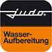

Heating Water Filling
JUDO i-fill
System zur kontrollierten Befüllung und Aufbereitung von Heizungswasser.
Preis auf Anfrage
Technische Daten
| Produktstatus | Direkte offizielle Modellseite in den bereitgestellten Quellen nicht vorhanden |
| Produkttyp | Heizungsbefüllsystem gemäß vorhandener Modellangabe |
| Einsatz | Heizungswasseraufbereitung |
| Hersteller | JUDO Wasseraufbereitung |
| Preis | Auf Anfrage / nicht bestätigt |
| Foto | Kein fremdes JUDO-Gerät zugeordnet |
| Datenhinweis | Technische Werte werden nicht aus ähnlich benannten Produkten übernommen |
Datenhinweis
Die Angaben stammen aus öffentlich zugänglichen Hersteller- und Produktunterlagen. Nicht veröffentlichte Werte wurden nicht geschätzt. Änderungen und Modellvarianten sind möglich.